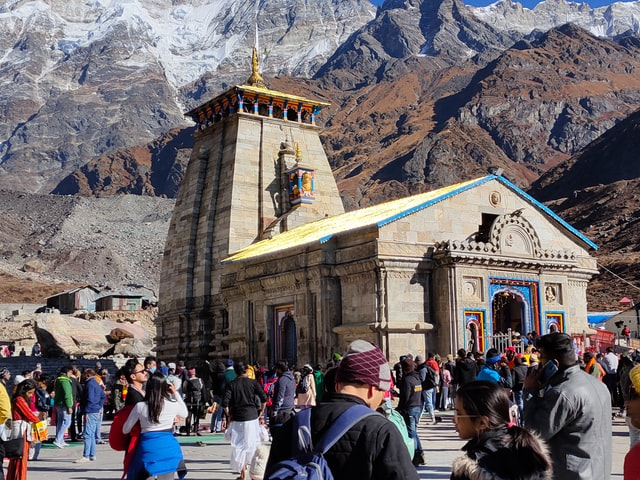
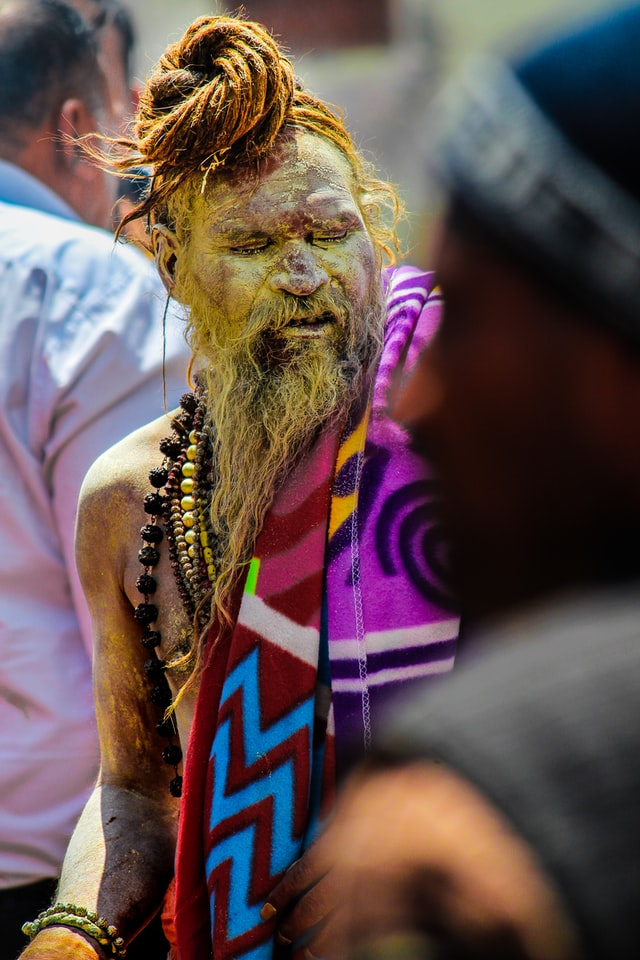
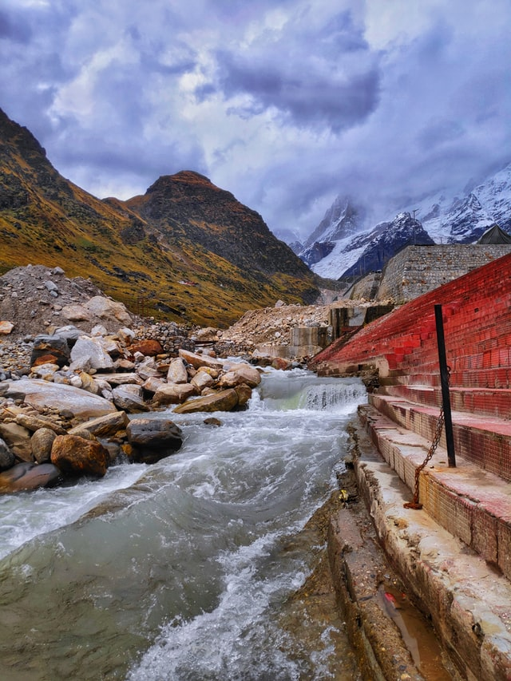
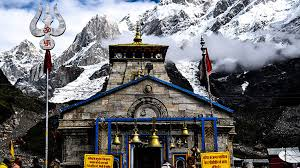
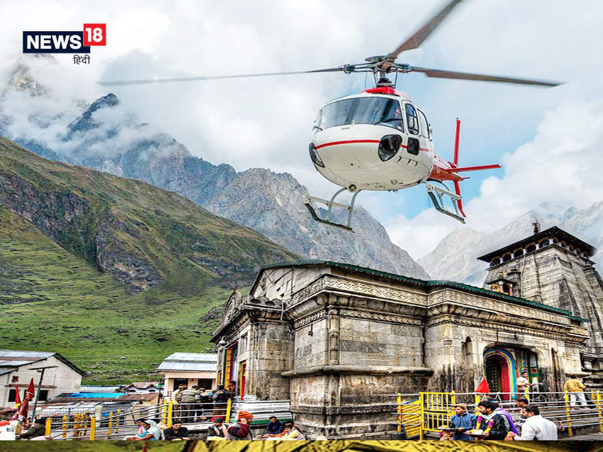

It is said that after the Mahabharata war ended, the Pandavas were full of remorse at having lost thousands to the violence. They handed over the kingdom's reins to grandson Parikshit and started for Varanasi to seek Lord Shiva's pardon.
Not interested in meeting them, Shivji leaves Varanasi/Benaras/Kashi and heads for the Himalayas in the form of a Bull (Nandi, the Bull). He reappears in Guptakashi as the bull and the Pandavas reach there.
Shiva escapes again and this time reappears as the bull in five different parts of India as 5 different parts of the bull's body: the face at Rudranath, arms at Tungnath, navel and stomach at Madhyamaheshwar, the locks at Kalpeshwar and the hump at Kedarnath. The powerful Pandava - Bhima - is said to have grabbed the bull's tail, forcing him to appear before them and forgive them. The Pandava brothers then built the first temple at Kedarnath.
These 5 places where the bull had appeared in parts after diving underground are known as the Panch (5) Kedar.
Situated in a region of Glacial activity, the temple is said to have been under snow for 400 years. The signs of glacial assault are still there on the walls, say geologists. The temple was miraculously saved by a BhimShila (massive boulder) that rolled down the mountains during the horrific cloudburst and natural calamity in June 2013. It is said Baba Bhairo Nath saves the temple.
Kedarnath Dham, located in the Rudraprayag district of Uttarakhand, is one of the most paramount locations for worshipers of Shiva. The air appears to be reverberating with the name of Lord Shiva amid the mighty snow-clad peaks, enchanting meadows and forests of the lower mountain range of Himalayas. Situated in a breathtaking location, near the source of Mandakini River and at the height of 3,584 meters, Kedarnath Dham celebrates the greatness of Lord Shiva. Kedarnath temple is one of the 12 Jyotir Lingams and is also the most important temple among the Panch Kedars (group of 5 Shiva temples in Garhwal Himalayas). It is also one of the significant temples of the sacred Chota Char Dham Yatra in Uttarakhand, raising the glory of the place to further heights.
Accessible from major destinations of Uttarakhand, the motorable road towards Kedarnath temple stretches till Gauri Kund. After that one needs to take a 14 km trek towards Kedarnath temple. Ponies and palanquins (doli) are easily available; one can also avail helicopter services during peak season of yatra.
Kedarnath does not have an airport of its own which makes Jolly Grant Airport in Dehradun the nearest civil airhead. Located around 250 km from Kedarnath, Jolly Grant Airport is connected to the major cities of India including New Delhi, Mumbai, Kolkata and Chennai. There are plenty of flights operating to and fro from these cities and provide a lot of options in terms of flight timing and fares. Almost all the major airlines have flights to Jolly Grant Airport. Once you are in Dehradun, you can either take a bus or hire a cab to reach Kedarnath.
Kedarnath is well connected to New Delhi and Dehradun by bus network. If you land in New Delhi, the best way is to take a bus to reach Dehradun which is about 260 km from the Indian capital. Kashmere Gate Bus Terminal and Anand Vihar Bus Terminal in Delhi are the two major interstate bus depots that run regular bus services to Dehradun. Once in Dehradun, you can take a bus to Kedarnath. There are plenty of options to choose from A/C sleeper, non A/C sleeper, Volvo A/C, Volvo A/C and semi-sleeper buses. You can also take a bus from Haridwar to reach Kedarnath. The distance between Haridwar and Kedarnath is around 125 km and buses take about 5 hours to cover the distance. Gaurikund is the nearest motorable area from Kedarnath.
There is no railway station at Kedarnath. Rishikesh Railway Station is the nearest railway head from Kedarnath. Located about 210 km from Gaurikund, Rishikesh Railway Station is well connected to almost all the major cities of India and has a regular trains on a daily basis. From Rishikesh, one can take a bus to Gaurikund.